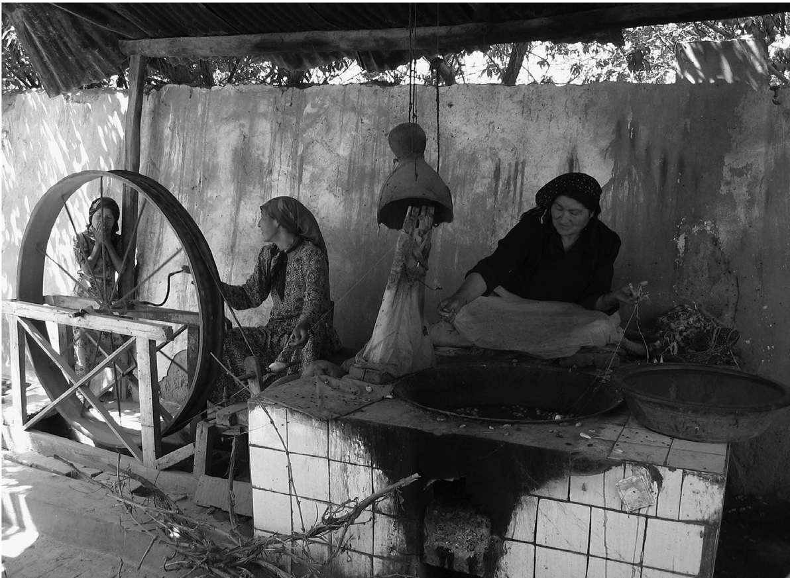

韩国人大多是了不起的登山者。就算年长的远足者也步履轻捷，对陡峭的地形或令人倦怠的潮湿不以为意，也很少停下脚步休息。他们还装备精良，就算星期天到首尔的北汉山远足，也会全副武装：除了随处可见的遮阳帽和印着山寺行程地图的花绸大头巾之外，很多韩国远足者还穿着戈尔特斯（Gore-tex ® ）面料的靴子、超细纤维的快干衣、超轻的背包，驼峰（CamelBak）公司的储水系统，还有伸缩式的钼制手杖。当他们真正停歇下来，准备进餐的时候，就会铺开一碟又一碟的腌肉、烤鱼，以及各式泡菜，配着小绿瓶装的烧酒（soju ）——一种带甜味的土产伏特加——享用。吃饭时，很多人喜欢舒服地坐在一种小型折叠凳上：两个用螺栓拧紧的长方形金属管料，中有横轴，布料座椅横铺在一端表面。
这种野营凳——一个经典的设计，韩国人用航空铝进行了改造——大概起源于北非，经过中亚，大约公元2世纪到达中国，中国人给它取了一个意味深长的名字：“胡床”，意即“野蛮人的椅子”。从古典时代起，亚洲人就知道胡床了，但它一直是个特色物品，因为东亚人不坐椅子。英语中把“毛主席”中的“主席”翻译成“椅子 人”（chairman ），“主席”是个古老的中文词，字面意思是“席子的主人”，因为那才是古代中国人在正式场合的坐具。所有这些都表明，就算是最司空见惯的“技术”，也有一部跨大陆的历史。
古代中国在技术上当然有能力制造椅子，但直到10世纪末11世纪初，固定框架的椅子——硬座面、靠背和扶手——才成为中国人室内的常见摆设。在那以前，在中国最早提到椅子是在佛教中，起初是用在神灵的坐像上（诸如龙门、云冈和敦煌石窟），后来是在劝诫僧侣的文字中（椅上打坐可避虫蛇）。从那以后，中国的宫廷开始使用椅子和王座，椅子后来才降下社会等级，进入寻常百姓家。如此说来，正是印度和中国之间长达数个世纪的与佛教传播有关的交流，才把椅子带进中国，并鼓励人们将它作为日常家居用品。
丝绸之路的历史上有过几次增进交流的时期和几个轴心。印度和中国之间的联系始于公元1世纪，直到9世纪中期才逐渐减弱，不但带来了佛教，还有很多非宗教的思想和物品。例如，除了椅子之外，中国的皇帝下旨采用了印度人从甘蔗中精炼白糖的技术。公元7世纪，阿拉伯军队暴起于阿拉伯半岛，产生了一个伊斯兰帝国和文化影响区域，使得大陆中部的大部分地区同样增进了接触和交流。从11世纪到13世纪，十字军让西欧与地中海南部和波斯重新取得联系，再次将经过伊斯兰教育改进的古典知识引入欧洲。蒙古人统一欧亚大陆，领土从高丽一直延伸到匈牙利，促进了很多跨大陆的双向交流和传播，包括军事技术和数学、天文学、制图学、农学及其他艺术和技术。
丝绸之路在很大程度上是由这样的时期所成就的，虽然人们习惯于把它想象成一条和平的高速公路，但事实上这些交流的增进却都兴起于战争和帝国的征服。就算是中印之间的联系，尽管表面上看来掌握在佛教僧侣的手中，也得益于汉唐时期中国军事扩张进入中亚，以及皇家资助的使团和翻译项目。这应该不会让我们感到意外：现代历史上意义最为深远的技术交流——工业化，就不仅仅是由个人或市场所推动的，也是国家的战略举措。当今很多新技术的推广也是一样。
丝绸之路的经纬线
和马一样，蚕的驯化也有数千年了。和马一样，丝绸也是与欧亚大陆的精英阶层密切相关的产品。丝绸和马匹是丝绸之路上最常见的一对交易物品。在最初的几个世纪里，中国的丝绸纺织品从东方运到西方，但持续时间更长、最终也意义更为重大的，却是在农业经济和畜牧经济之间、将丝绸（和其他）纺织品从南方运到北方的交易。马匹和丝绸分别代表了大草原和耕地的本质，前者体现了中央欧亚游牧民族的军事力量，后者象征着欧亚边缘地带的文雅精英着重于感官享受的温和生活。农业土地上对于运输和骑兵坐骑的需求与游牧部落对于纺织品——特别是精美丝绸——的需求互补，丝绸象征着正统和地位，帮助游牧精英获得属下的支持，还可再次出售谋取利益。这种差异和互补构成了丝绸之路历史的一个主要推动力。
人类与丝绸的关系是私密、家居、女性化的。传说养蚕的发明者是西陵氏，神话中的华夏祖先黄帝之妻（据说她生活在公元前3千纪中期，但迄今发现的蚕茧可追溯至公元前5000—前4000年）。西陵氏无意间把一颗蚕茧掉进热茶中，发现这样可以把蚕茧展开，变成一根连续的长丝。另一个故事是，公元1世纪，有一位中国公主嫁给了中亚的一个国王，为了保证自己能得到足够的丝绸供应，她把蚕种和桑树种子裹在头饰中，偷偷带到了和田。一千年后，据说意大利的女人在自己的双乳间用袋子孵化蚕种。
人类长期直接干预蚕蛾（Bombyx mori ）的繁殖，使它再也无法在野生环境中生存了；丝绸生产的基本条件自古代以来并没有太多变化。世界各地的养蚕人家在满怀关爱地守护和孵化那些小小的蚕种（一盎司 [26] 有35000个）之后，就会点燃火盆或者住到谷仓去，把温暖的房子留给柳条盘子里的幼虫，以保护它们免受早春寒意的侵害。如今，蚕种和幼虫仍在蚕盘中孵化和养育，蚕蛾的幼虫只会贪婪地吞食一个品种的桑叶；出产一磅丝需要大约200磅桑叶。细心的养蚕人日夜操劳地喂养这些虫子长达五周左右，直到它们将近3英寸（7—8厘米）长。这些虫子随后会通过头部的腺体吐丝，那是一种由蛋白质（蚕丝蛋白）和树脂（丝胶）合成的物质。它们以“8”字形不停地转动头部，用一条长达4000英尺（1200米）的强韧丝线把自己裹在茧中。在整个过程中，传统的养蚕人家像新生儿父母一样照料着它们，避免发出大声响，让它们吃得饱饱的，还要清理蚕盘上的排泄物。整个过程的这一微妙阶段也曾有过迷信：例如在中国，来月事的女人不能进入养蚕的房间。

图6 和田妇女展示传统的纺丝技艺。在水中煮蚕茧即可缫丝，然后将其纺成较粗的纤维，以便染色和纺织
一旦结茧，养育过程就结束了：在它们变成蛾子钻出来之前，人们就用蒸汽或是传统的浸入开水的做法迅速杀死蚕虫。随着热量溶解树脂，就可以找到细丝的末端并将其展开。五到七个蚕茧的细丝纺在一起组成一根丝线。用这种丝线织成的织物柔软强韧，比羊毛或植物纤维更易于染成绚丽的颜色。丝可以织成整匹的纱罗——最初钟爱这种丝织品的是罗马人，也可以织成大花的大马士革锦缎。
古代希腊人和罗马人认为，丝绸来自一个叫作赛里斯（Seres）的地方——语言学家近来论证，这个词的词源正是汉语的“丝”字，最终的词形经过了各种中央欧亚语言的过滤。但即便绫罗加身，又对其垂涎不已，罗马人也并不知道丝绸制造的技术。维吉尔在《农事诗》（公元前1世纪）中写道，当时的罗马人普遍认为丝线是从树叶上梳理下来的；大约与此同时，希腊地理学家斯特拉波说，丝是生长在印度的某些特殊树种的干树皮。一个世纪后，老普林尼仍将赛里斯人的丝描述成“在他们的森林里找到的羊毛”。赛里斯人，也就是中国人，将其浸湿，梳掉上面的绒毛，“然后，他们把解开织物、重新编织这两重任务交给了我们这边厢的女人。所以说，为了制成一件我们的贵妇人们公开展示其魅力的华服，需要多少辛勤劳作，还要到多么遥远的地方去劫掠一番”。看起来罗马的女人会修改进口的丝织品，要么是松开紧密的编织，要么是将其改做成某种饰带。因此，罗马诗人卢坎在提及克娄巴特拉 [27] 时写道：“她洁白的胸脯透过西顿城的织品熠熠生辉，这种织品是用赛里斯人的筘座细密编织而成，尼罗河的工匠用织针分离，并通过延展织物松开了经纱。”
普林尼大肆抨击这种透明的昂贵织物。哲学家塞内加同意他的观点，据说他曾悲叹道：
看看他们为点儿蚕虫的唾液废了多少口舌！然而从这些保守派批评家们的激烈言辞中我们得知，丝绸在当时的罗马帝国还是新鲜事物，使用者刚从统治阶层拓展到略为广泛的社会阶层，但仍为精英人士所专属。在北欧的一些考古遗址发现了可以追溯到那以前数个世纪的微小碎片，但直到公元前1世纪至公元后1世纪，丝绸才为罗马人所知并日渐普及——时至今日，丝绸仍然不远万里地从中国辗转而来。
有人说张骞开辟了丝绸之路，这种说法是错误的——如前文所述，跨欧亚的交易可以追溯到张骞之前数千年。但张骞为了寻找对付匈奴的盟友而走访中亚（约公元前129年）的确促成了中国丝绸在中亚的热销，它从中亚经由巴克特里亚（贵霜帝国）、印度和帕提亚一路交易，其中有些最终抵达了罗马。然而，中国丝绸西渐的本意并非作为一种消费品，而是推行帝国政策的工具。在这一时期，汉帝国把大量丝绸运到北方去绥靖匈奴，换购马匹。张骞后来有一次出使一个名为“乌孙”的新疆北部游牧民族时，带去了价值一亿钱（中国货币单位）的黄金和丝绸。后来，为了获得来自西方的高头大马而被派驻中亚其他国家的汉朝使节多达数百人，司马迁在《史记》中对其中的很多人都嗤之以鼻，称他们
这说明除了官方交换外交礼物之外，还夹带着走私行为，惹恼了中国的“太史公”们。下一个在中亚广泛运作的中国朝代是唐朝，同样为了战略目的而利用本国丝绸生产的相对优势。唐朝主要以丝绸制品来支撑其在“西域”（今新疆）的行政经费——数量高达每年90万匹，用作通货。那些年，唐朝向如今蒙古境内的突厥人和回鹘人运送了数十万匹丝绸。
中国未能在丝织品生产的所有方面始终保持其垄断地位。塔里木盆地的居民在公元1世纪就了解了基本的养蚕技术。某些学者认为，到公元3世纪，印度也开始生产丝绸。拜占庭在公元550年前后便获得了蚕种（据称是聂斯脱利派教士装在竹筒里偷出中国的），并在皇帝查士丁尼一世（527—565年在位）统治期间由国家垄断，开启了自己的丝织品工业，不过当时它仍然继续从埃及和萨珊波斯采购丝绸。12世纪，蚕虫的培育传到了西西里，并于13世纪登陆意大利半岛。
但就算在那之前，跨大陆丝绸贸易的特征也早已发生了改变。到6世纪，沿东——西大陆以及经由印度的海上路线所售的已经不是成品丝绸，而是丝线了。这些丝线在地中海地区进行编织（例如大马士革，因而有了“大马士革锦缎”这个词）以适应本地的品味；质量最好的成品丝绸是用产自腓尼基港市西顿和提尔（今黎巴嫩）的一种地中海软体动物的壳所制的染料染成紫色的那一种。
尽管接下来的几个世纪，在长距离的东——西方丝绸贸易中，成品丝绸的比重下降，养蚕技术也传播到了欧亚大陆气候适宜的最南端，但在大草原和定居的农业国家之间的北——南方丝绸和其他纺织品交易却长期存在，构成了基本的经济和战略态势。例如在18世纪，莫卧儿帝国每年从中亚大草原和伊朗进口马匹来支撑它的骑兵，数量高达5万匹。印度商人用染料和纺织品——主要是先进的印度纺织工业生产的棉布——交换中亚的马匹。很多印度产品在布哈拉和其他中亚城市再次交易，在俄罗斯帝国向东扩张时落入俄罗斯的手中。这种印度——中亚——俄罗斯之间用纺织品换取马匹的贸易一直持续着，直到19世纪英国逐渐削弱了印度的纺织业。
中国也是如此，用纺织品换马匹的贸易在唐朝、宋朝和明朝持续下来，并逐渐由茶叶销售予以补充，因为这种饮料成为游牧民族的生活必需品，而俄罗斯人也培养了对茶叶的爱好。18世纪末和19世纪，清帝国再次开启了向哈萨克人出售丝绸和棉花的大宗交易。新疆北部的清朝官员用产自中国南方的丝绸交易大草原的马匹，用新疆南部的棉布交易牛羊。从1759到1853年，清朝把将近42万匹皇家丝绸从中国南方运到了中亚。纺织品换马匹的贸易，丝绸之路的经线和纬线，就这样延伸到了现代。
丝路还是纸路？
如今，随着报纸的数字化，数百万人使用小型电子设备来阅读“报纸”；这些设备还能帮助我们交流、用地图和罗盘导航、录制和显示音乐和图像、阅读文学、预测天文现象、进行数学计算、了解市场价格或翻译外语。任何生活在20世纪末和21世纪初的人都知道，这种科技带来了怎样翻天覆地的变革。同样，虽然丝绸是丝绸之路上最绚丽迷人的产品，纸张也产生了最大的影响力，因为就我们如今使用智能手机进行的大多数活动而言，纸张的出现意味着第一次重大突破。再说还可以用它包炸鱼和薯条呢。
纸张含有植物纤维，这些纤维在水中经过捶打而悬浮其中，随后又在筛子上晾干制成毡片。和很多物品一样，它也是中国首先发明的，传统上把这归功于公元2世纪的蔡伦。但迄今发现的使用实例最早可追溯至公元前1世纪。纸张可能首先用于包裹物品，后来才用于书写（取代了竹简，也成为用作书写的丝织物和碑石的补充）。但这种柔软强韧的材料也有其他用途，包括做成衣物、鞋帽、盔甲、风筝，以及今人仍然很熟悉的无关文化的用途：6世纪的一位中国学者曾告诫家人不要在如厕时使用写有经典文字的纸片——这表明当时的纸张相当廉价。（1960年代和1970年代，中国文化大革命期间也发生过同样的问题：人们很难把旧报纸用于惯常目的。）
佛教和中国的科举制度（考察候选人对中国经典的掌握程度）促使纸张的使用传播到邻国。高丽和越南在公元最初几个世纪里采用了纸张；据说一位高丽僧人在公元610年把造纸术传入了日本。那时高昌人已经开始造纸了，但奥莱尔·斯坦因和斯文·赫定等考古学家在新疆发掘出的纸质文件的年代还可向前追溯几个世纪，其中一些是官方或商业记录。粟特人的信件就是写在纸上的，其中有一封描述了4世纪的匈奴袭击。很多其他纸质记录，包括在敦煌藏经洞发现的最早的印刷书籍等物品，都与佛教有关。奇怪的是，中国僧侣早就把纸带到了印度，但纸张的使用一直到12世纪才在印度流行起来，彼时佛教早已在印度衰落了。或许是潮湿的气候和大量昆虫的繁殖使得纸张很难成为长久的宗教文本媒介，不过后来的印度——伊斯兰文本倒的确使用了纸张。
唐朝与阿拉伯军队在公元751年交战的怛逻斯战役被后来的一份阿拉伯史料记载为纸张传播到伊斯兰世界的催化剂：据赛阿里比写于11世纪的《趣闻逸事》记录，在那场战役中被俘的中国俘虏中，有工匠在撒马尔罕开了第一个造纸作坊。虽然纸张很可能在怛逻斯战役之前好几十年就已经为河中地区所知并已开始生产，撒马尔罕却是第一个在全新的伊斯兰世界中发展造纸术，并因出口纸张而闻名于世的地方。从那以后，纸张极其迅速地传遍了整个阿拔斯哈里发国。据说，公元794或795年，哈里发哈伦·拉希德在首都巴格达建立了一家造纸厂，为其日渐庞大的官僚机构供应纸张。在接下来的两个世纪，造纸术传播到了叙利亚、埃及、北非和西班牙。此时，欧洲也得知了纸张并从阿拉伯世界进口，但直到12世纪（西班牙）和13世纪（意大利），欧洲才开始造纸。
中世纪基督教世界与伊斯兰世界之间的纸张鸿沟反映了它们的学识和学术差异，也是造成这种差异的因素之一。伊斯兰世界各种书籍和地图的制造和流通迅速发展，恰恰呼应了9世纪以来纸张的再度兴起。因此，纸张刺激了基于希腊——罗马传统和伊斯兰科学的学问的精进，但它还有一个民间层面的意义：现存最早的《一千零一夜》文本就是在9世纪的埃及或叙利亚抄在纸上的——也就是说这本书的此一版本价格相对低廉，因而在某种程度上向普通人开放阅读。相比之下，就算在数个世纪之后，欧洲最大的图书馆也只收藏了几百本书，所有的内容都写在极其昂贵的羊皮纸或牛皮纸（都是加工过的动物皮）上，很多书都用链条锁在桌上——索邦学院 [29] 就是这么做的。
当然，让文字真正广泛传播的——实现了革命性成果，特别是在欧洲文艺复兴时期——是多种技术的组合：机械印刷的纸张。1454—1455年，古腾堡用活字印刷了他的《圣经》武加大译本 [30] 的多个副本，众所周知，这是欧洲历史上的一个里程碑。和纸张一样，印刷技术也源自东亚，在那里雕版印刷和活字印刷都在几个世纪以前就为人所知。雕版印刷是在很多技术先例（图章、拓印、纺织品印花）的基础上发展而来的，始于公元700年前后的中国，现存的两个最早的例子都与佛教有关：一个是公元8世纪初的护身符手卷，另一个是在敦煌发现的最早的书籍，公元868年雕版印刷的《金刚经》手卷，现存于大英图书馆。人们相信反复祷告或复制经文可以积累业报，或许正是这种观念促进了各种机械大生产方法的发展。
11世纪中期，中国发明了活字，最早的金属活字是两个世纪后在高丽发展出来的——还是要早于古腾堡。现存最早使用活字印刷的图书就是高丽语文本（《直指》，1377年印制的禅宗佛教入门书籍），但活字在中国和整个东亚一直是位居次要的技术。早期的活字有助于印刷字母文字或音节文字，也就是不同字母的数量有限、可多次重复使用的文字。因此在公元1300年前后，活字被用于印制一种起源于粟特语的古老的回鹘文字。但是，中国、日本、高丽和越南使用的汉字有数万个字符，其中的一些使用频繁，另一些却几乎从不使用——依文本的主题，使用频率变化极大。这就需要一套数目极其庞大的活字，就这样或许仍然不能满足所有的需求。比起用数千个活字字符来铸字、排版和重新排版，以阴文雕刻的木板效率要高得多，还可以同时印两页纸。木板还有一个优势，就是可以较为简单地实现同一页面上文字与图片的整合。
印刷这个例子应该算是扩散还是文化趋同？我们不清楚古腾堡在开发自己的排印系统时，是否受到了亚洲榜样的启发。有一个说法是，他那位来自威尼斯人家的妻子曾在娘家见过中国的木刻。另一方面，古腾堡以一种独特的方式把各种技术元素（墨水、印台、活字和印刷机）结合了起来。可以肯定的是，古腾堡时代之前，印刷和印刷品是沿着丝绸之路从中国经由伊斯兰世界进入欧洲的。蒙古人也曾推动了印刷品的西渐。13世纪末，他们采纳了中国人的做法，在其波斯领土上印制纸钞。纸牌是另一个例子。纸牌是大批量印刷的产品，首先于9世纪在中国使用，并在其后几个世纪出现在整个伊斯兰世界。到14世纪，欧洲也有人提到它们，可能就是蒙古人带过去的。印刷的宗教图片的引进时间和地点相似（从伊斯兰世界来到西班牙和意大利，或许又由于蒙古人在东欧的活动传到了德国）。总而言之，蒙古帝国所推动的长途旅行让欧洲的传教士和商人得以察看和获得印刷品，并在其游记中写到了它们。欧洲印刷术的重大发展究竟源于一个大胆的发明，还是基于一个“欧洲印刷术发明的中国背景”，这在很大程度上取决于我们如何定义“发明”；此外，和前文提到的面食一样，还取决于讨论者的护照上印着哪个国籍。
医学
很多人提到过中国的药食同源，那里的人们并不认为二者分属于不同的门类，而是人吃下之后对身体发生作用的事物连续统一体。这常常被用于证明中国传统保健法比现代医学更注重“机能整体性”。同样，传统的印度阿育吠陀医学 [31] 背后的哲学也强调营养，以及摄取某些食物来恢复“平衡”和健康。这两种传统都认为某些食物性“热”或“寒”、“湿”或“燥”（虽然这两种传统认定的同样性质的食物可能不一样），与它们的物理温度或多汁程度无关。一起食用时，食物的口味和类型都有讲究，不仅是为了改善口感，也是为了保证膳食健康。例如在印度，一个身材苗条、充满活力的人，其身体各部分都由风性（vata）——一种由空气和以太所组成的“体液”（dosha）——主导，会被告知进食小扁豆会导致胃肠气胀。在中国，人们会建议发烧的人吃梨（寒性），而不建议他食用橘子或姜（热性）；肉类和内容丰富的炖菜非常适宜病人或在寒冷天气食用，但绝不该在夏季进食狗肉（高度热性，与大蒜和辣椒一起烹制时尤其如此）。
这种将传统文本知识和不断发展的民间传说相结合的做法常常被我们拿来区分“东方”和“西方”的医学。但实际上，这些做法背后的机理，当是一种更古老的泛欧亚医学理论的残留，即使在西方，这种理论也一直流行到19世纪；直到那时，新的发现和经验实践才真正开始建立起一套知识体系，也就是我们如今所知并在全球实施的现代医学。
古希腊——罗马、印度、中国和伊斯兰的医学传统都有根据其“湿气”及其对身体的影响把食物归于某个类别的概念。每个传统都有一些当地独有的特点，但都表达了关于身体组成及适当机能的某种说法，也就是通常所谓的“体液理论”。西方关于这一机制的版本源自希波克拉底的学说，后来由2世纪的医师盖伦发展成为详尽的理论。该理论认为，四种体液都是身体里的液体（黑胆液、黄胆液、血液和痰液），分别对应着四种“元素”（土、火、气、水）、季节（秋、夏、春、冬）、脾气秉性（忧郁、易怒、乐观、冷漠）、身体器官（脾、胆、肝、脑/肺），以及热、冷、燥和湿等特质的不同排列和交换。这种盖伦派观点看起来显然与印度的体液说有关，但关于传播的确切机制——乃至传播的方向——一直争议不断。但无论如何，地中海与中亚的希腊城邦之间的接触可能起到了一定的作用。
至于中国，汉朝（公元前206—公元220年）的《黄帝内经》中没有体液理论，但到公元5世纪，中国医学文本就认为疾病是身体中热、寒、湿、燥的失衡，并指出哪些食物中含有这些特质。和历史上多次传播交流一样，佛教似乎是这些思想从印度传入中国的媒介。中国关于自然哲学的佛教著述认为，身体是由四种元素组成的：土、水、火和气——这些元素一旦失衡，就会导致疾病。邪气也会致病，前生的恶行也是一样——这些观念也是源于印度的舶来品。中国本土与这些概念并存的理论并非“四种元素”，而是“五行”（木、火、土、金和水），“五行”继而对应着五味（酸、苦、甜、辛、咸）、五感，以及两套器官。在中国18世纪的伟大小说《红楼梦》中，书中的人物因为恶鬼附身、孽缘或执念而致病，其治疗依据就是体液系统。如此说来，中国民间观点吸收了印度的医学思想并将其与本土的古代思想相调和，至少在体液平衡的问题上如此。如今，中国关于“热性”或“寒性”食物的观念依然盛行。如果有人劝你夏天喝鸭汤或吃莲子，而别吃驴肉火烧，这些建议所依据的逻辑虽完全是中国的，但同时也是丝绸之路互动的产物，最终还能与古希腊联系起来。
体液理论进入北欧和西欧的时间晚于中国，与古典地中海传统的很多其他方面一样，也是在丝绸之路上盘旋了一段时日之后，才到达那里的。阿拔斯哈里发国的首都巴格达是当时世界上最大、文明程度最高的城市之一，该国积极资助保存和翻译希腊哲学和科学文本，包括盖伦的医学著作的活动。正如玄奘和尚曾学习梵语并前往印度收集佛教经文一样，公元9世纪，身为聂斯脱利派基督徒的阿拉伯学者侯奈因·伊本·伊斯哈格也学习了希腊语，并前往拜占庭收集医学书籍，其中包括一百多部盖伦的专著。侯奈因是一位翻译大师，把大量医学和其他著作翻译成叙利亚语和阿拉伯语（盖伦的某些著作仅存侯奈因的译本），从而为伊斯兰世界数个世纪的医学著述——包括拉丁语名字为“阿维森纳”的布哈拉学者伊本·西纳的著作——奠定了基础。伊本·西纳的《医典》是伊斯兰和希腊医学知识的集大成者，是11世纪中期以后进入欧洲的所有医学译作和新著中的翘楚。这些著作先是途经意大利的萨莱诺城；那里接触过拜占庭的学者们通过另一位翻译家“非洲人康斯坦丁” [32] 的翻译工作，研究了盖伦派传统以及亚里士多德等人的经典著作。（精通外语之人的工作对于世界史是多么不可或缺啊！）起源于古希腊和罗马的体液理论和其他医学知识就这样经由拜占庭、巴格达、布哈拉，以及丝绸之路上的其他情报集散地，来到了中世纪晚期的欧洲。
体液理论在某种程度上是“有效”的：有时，它能正确识别某些食物的营养价值及其针对特定病情的适宜性。但还有一种真正有效的医学技术，丝绸之路对其发明和传播都起到了作用。天花是起源于欧亚大陆的最致命的疾病之一，很可能始于一种跨物种传播的啮齿类动物病毒。这种疾病从公元前2千纪便开始在埃及和印度折磨人类，从那里传播到大陆的四面八方，侥幸未死的患者也会留下疤痕或致盲。作为一种“群居疾病”，天花是很多人口密集地区的地方病，致死率接近30%，儿童致死率尤其高。但瘟疫幸存者却可以终身免疫。因此，城市和农业地区的成人有可能接触过这种疾病并幸存下来，且至少对其有部分的免疫力。但中央欧亚的游牧民族可不是这样，他们人口稀少，不经常接触定居地区，也就是说大多数成年人从未接触过这种疾病。因此，对于哪怕是最凶猛的游牧征服者来说，乡镇和城市也有可能置其于死地。
可能是因为这个原因，第一批系统性防范天花的政府接种工作（方法是将某种形式的活病毒引入健康人体内）就发生在起源于欧亚大草原的那些国家：奥斯曼帝国和清帝国。公元500年左右，中国将此病明确定性为一种独特的疾病，四个世纪之后，伊斯兰世界的拉齐才确诊此病（盖伦并未提到过它）。公元前1千纪或前2千纪，印度曾有人建议接种，但第一次明确应用接种却是在公元10世纪的中国；从那时起，中国人似乎试过各种接种方法（故意引入活病毒来刺激免疫），直到16世纪，接种方法尽管仍然相当危险，却已成为一种广为人知的技术。此后，中亚和非洲也出现了各种版本的接种做法，既有可能是从中国传入的，也可能是独立发明的。我们知道，在蒙古帝国的统治之下，中国和波斯之间曾有过大量医师往来和医学信息交流。
对于中国清朝（1636—1911）的满族统治者来说，天花既是一个医学难题，也是一项政治挑战。满族的军队组成包括满族部落及其蒙古同盟；朝廷大力促进与蒙古亲王和西藏高阶喇嘛的密切关系，但他们都因害怕染上天花而迟迟不肯前往清朝的首都北京。的确，三世班禅 [33] 喇嘛就在1780年的一次国事访问之后死于此病。最重要的是，满族皇室本身也深受这种疾病的折磨。满族的康熙皇帝（1661—1722年在位）是中国最长寿的统治者，他幼年即被选定为继承人并登基，部分原因就是他曾染上天花却幸免于难——那或许正是他父亲的死因。康熙好奇心强，爱好广泛，相信经验。1680年代，他曾在自己的儿女和效忠清朝的蒙古八旗统领身上亲手试验了各种安全接种技术。尽管最常见的中国方法用到了（来自脓疱结痂粉末的）活病毒，所用的结痂却只取自那些接过种或是感染过此病的温和变种的人，而不会取自严重的天花患者，并且接种是在把这些病毒材料在受控环境中保存一段时间后才进行的。这些诀窍减弱了病毒的威力，把感染的风险降低到可接受的水平。
在欧亚大陆的另一端，在奥斯曼帝国普遍使用的是一种更直接的接种方法。1716—1718年，英国大使的妻子玛丽·沃特利·蒙塔古夫人在伊斯坦布尔学会了这种技术，她给自己的家人接了种，并在英国大力提倡使用这种方法。有关接种的信息通过英国皇家学会的科学刊物而普及开去，此过程所反映的恰是康熙帝的实证思维习惯，却要在欧洲启蒙运动时期的典型公共语境下才得以实现。1720年代，人们开始在纽盖特监狱的犯人及波士顿的殖民地居民身上试验，接种最终被广泛接受。1796年，威廉·詹纳发现了使用牛痘病毒接种疫苗的方法，这样一来，人类在获得某种免疫时便无须再以身犯险，接触天花病毒了。
1979年，在一场使天花免疫实现现代化和普及化的全球运动之后，世界卫生组织宣布已根除了这种疾病。这是20世纪公共卫生领域国际合作取得的最伟大成就之一。但这方面的国际努力在很久以前就已经开始了，虽称不上协调一致，但接种方法早在那时就已在欧亚大陆出现和交流了。
军事技术
天花最后几次爆发中的一次，发生在中央欧亚的心脏地带，哈萨克斯坦的港口城镇阿拉尔斯克。苏联在咸海的沃兹罗日杰尼耶岛部署了秘密生物武器设施，1971年，一次天花气雾试验的效果似乎太过了一点：它吹向岸边，导致十人感染，其中三人死亡，并引发了一场秘密的大型免疫运动。这次意外直到2002年才最终被揭露，加剧了人们关于后苏联时期的恐怖分子有可能获得类似的天花或其他疾病，并将其用作生物武器的担忧。
当今人们最大的担忧之一，是生物、化学或核武器从已经拥有这些武器的国家向其他实体的扩散。但如果以史为鉴，这是一场注定失败的战役：没有什么比新式军事技术的扩散更迅速、更普遍的了。任何势力采用高效武器的动机——以及反对不采用这类武器的负向激励——都强不可遏。在我们的时代，最突出的例子当然是原子弹与热核武器，它们以技术的直接扩散（通过间谍活动和技术让渡）和“刺激扩散”——一个群体基于另一个群体发现的某个概念而独立发明，而不是直接进口物品本身——相结合的方式进行传播。
美国发展并于1945年首先使用了核武器之后，苏联也在1949年（在中亚的塞米巴拉金斯克 [34] 试爆了核武器；英国和法国在后来几年里也步其后尘。从1950年代到1960年代——苏联和中国关系友好的十年里——苏联顾问向中国的原子能科学家提供了原子研究设施、一台试验反应堆、一台回旋加速器、气体扩散厂的各种零件，以及其他辅助技术和财政支援，恐怕算得上历史上最重大的“丝绸之路”技术转移之一。除了社会主义兄弟友爱之外，促使苏联提供这种援助的一个原因是他们缺铀，而中国新疆有丰富的铀矿。1957年，苏联把原子弹样品和完整的文档打包，正准备运往中华人民共和国时，两国关系冷却，苏联废除了转让协议。然而，中国科学家继续研发，1964年试爆了一颗原子弹（还是在中亚，在新疆的罗布泊：古老的丝绸之路一直是可怕的现代武器所偏爱的试验场）。
欧亚大陆的军事技术转移屡见不鲜。正是骑兵情结的扩散塑造了这片大陆的语言学地图，并支撑了游牧国家独特的、长期运转的军事——政治体系。这始于马匹的驯化及其用作骑乘（公元前4200—前4000年），以及从美索不达米亚引入的牛、驴等畜力轮车，使得深入大草原的游牧生活成为可能（公元前3300年）。下一个重要的技术是战车，它曾被认为是在近东地区发展出来的，事实上则起源于中央欧亚。在乌拉尔南部东段大草原上的辛塔什塔和彼得罗夫卡遗址发现的最早的车葬可以追溯到公元前2100年，与那里高强度的青铜冶炼有关。
战车并非寻常的车，它只有单轴连接的两个轻便的辐轮和一个车体，设计只载一人或最多三人站乘。在这样一种轻型车上驱使两匹或四匹马高速前行，同时向敌人射箭或投掷标枪，需要大量的技巧和练习。装备战车军队需要重金投入金属（青铜）和其他五金器具。投入的这些时间和财富，以及与车葬一起入土的武器和精美陪葬品表明，生产和部署战车的大草原社会等级分明，权力集中掌握在精英们手中。
在其他方面，战车也是一种改变世界格局的技术，可以说与后来的火药不相上下。战车的时代对应于公元前2千纪的移民潮，以及说印欧语的人从欧亚大陆的北部和中部入侵大陆边缘地带：赫梯人入侵安纳托利亚、叙利亚和上美索不达米亚；迈锡尼人入侵希腊半岛；以及所谓的雅利安人入侵波斯和印度。大约与此同时，不说印欧语的喜克索斯人也驾着战车入侵了埃及。年代在公元前1200年左右的中国商朝墓中突然出现了战车，此前并无技术先例。两个世纪后，来自中国西北部、获得马匹更加方便的民族所建立的周朝使用大量战车，推翻了商朝。当时，欧亚大陆的古代精英们都把战车用于军事或作为象征：古挪威、希腊——罗马、波斯和印度的神灵都乘坐着战车。
在考古遗址发现的战车和挽具系统的技术特征表明，整个大陆的战车都有一个共同的起源。这是一个由扩散引起人口流动和政治动荡的例子，它有助于古代世界地图的绘制，并使得各种印欧语言在大陆上广泛传播。
然而，战车的荣光转瞬即逝。到罗马人用战车比赛，或秦始皇用战车陪葬，抑或汉墓中用战车浮雕之时，它们已经仅仅被用作权力符号了。甚至在荷马描述特洛伊平原上的战车大战时，他所吟诵的也是早已过时的战争。战车可以被重装步兵队形轻易击败，也无法抵御装备了复合短弓的轻骑兵射手。有了马镫的发明及其在欧亚大陆的传播（公元初的几个世纪，中国人依照印度人和贵霜人的先例而发明），射手可以在马鞍上坐得更稳了。
马镫传播开来以后，就像很多其他交流一样，下一个军事技术转移的高峰也发生在蒙古帝国时期。1268年，很多中国南方城市久攻不下，蒙古人把波斯工程师请来攻城，他们建造了各种欧洲配重式抛石机来轰击城墙。中国人称它们为“穆斯林射石炮”，但在波斯历史学家拉施德丁看来，这些抛石机却是“欧洲货”。这样的武器数十年前才刚刚来到黎凡特 [35] 地区，并在1191年十字军围攻亚克城时起到了决定性的作用。
大约与此同时，在反方向上也出现了一个里程碑式的军事技术：火药以及各种枪支。火药是中国人发明的；公元850年的一个道教文本中记述了一种早期的配方。到11世纪，早期用硫黄、硝石和含碳物质（包括蜂蜜）制成的混合物被提纯成粉末之后不只会燃烧，还会爆炸。烟花为各种火器（炸弹、燃烧的箭矢、飞弹，以及会喷出火和陶瓷碎片的长矛）的发明提供了灵感，最终到13世纪，出现了先用竹筒、后来又发展到用铁壳装载的炸弹。宋朝的军队曾一度使用这些武器抵御蒙古人，保卫自己的城市。13世纪末到14世纪初，中国出现了可远掷发射物的滑膛大炮。
蒙古人自己没有具体用到过火器。然而令人惊讶的是，正在蒙古统治时期，有关火药和火器的知识深入了印度、中东地区和欧洲。可能是蒙古帝国打开的信息渠道推动了这一技术的传播。15世纪初，欧洲的第一批野战炮与大约一个世纪之前的中国大炮很像。如前所述，军事技术的转移速度是很快的。
火药和火器最终改变了战争的进行方式；它们还对一种常见的欧亚大陆政治巩固模式贡献颇多：各君主政体纷纷采用绝对的中央集权，包括俄罗斯和西伯利亚的莫斯科公国、奥斯曼帝国、伊朗的萨菲王朝，印度的莫卧儿王朝——这些国家通常被称为“火药帝国”——以及日本的德川幕府和中国明朝。在欧洲，旨在制造威力更大的大炮、更坚固的城防，以及创立火器使用效率更高的步兵的军备竞赛结束了封建制度，导致国家之间的激烈竞争及火器生产和部署的技术进步。这进而刺激了西班牙、葡萄牙、荷兰，最终导致英国、法国和其他欧洲势力纷纷建立海外帝国。蒙古时期的丝绸之路技术转移启动了很多我们认为与近代世界早期有关的军事和政治发展，这种说法绝非毫无道理。